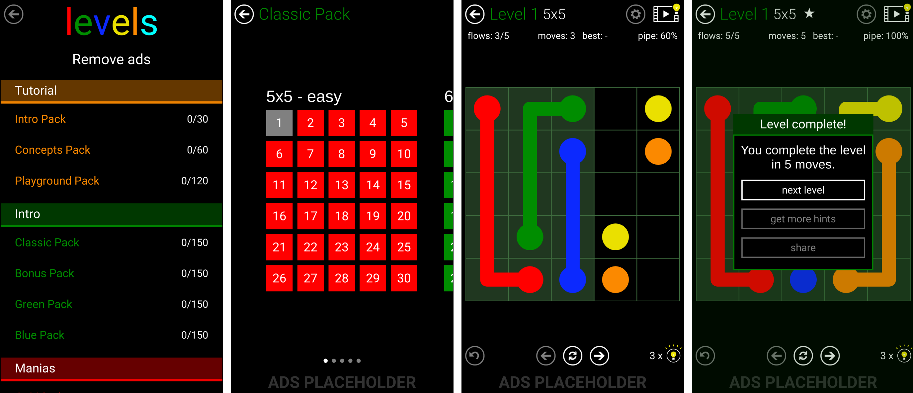

Mobile Games
Both of the following games are replicas of existing games. They have been copied just for educational use and in any case for commercial use. In fact, these games are not even available for download.
Oh nO
Oh nO is a little logic mobile game created by Mertin Kool and inspired by the Japanese Kuromasu. Anyone can play the original game.
Our replica was created by a group of three using Android Studio. Our game is multiplatform with Android and PC. The main objective of this project was to learn how to use Android Studio and how to organize the basic structure of multiplatform games.
Free Flow
Free Flow is a puzzle mobile game made by Big Duck Games LLC that can be downloaded on Play Store.
In this case, the game was developed in unity but we were the same three developers. This game is also multiplatform with PC and Android. The objective of this game was to gain experience with mobile games in unity, saving progress and using adds.